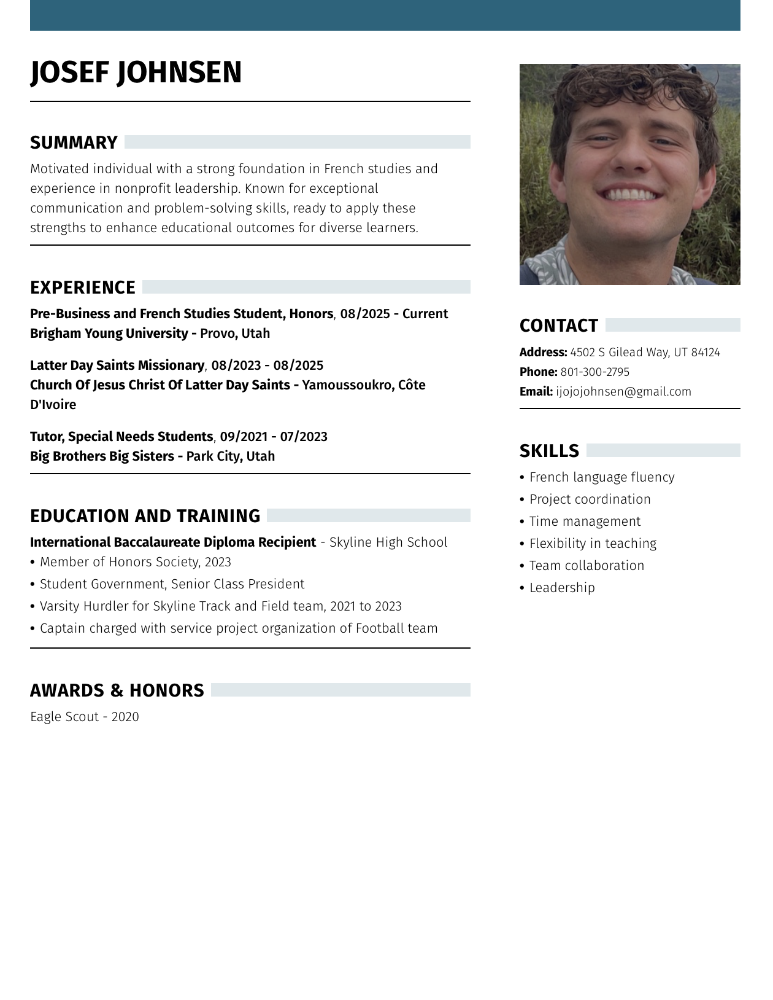

Josef Johnsen
Double major in pre-business and French Studies, with a strong background in leadership and service
Brigham Young University student pursuing pre-business and French Studies with experience in tutoring, student leadership, athletics, and two years of missionary service in Côte d'Ivoire. Strong in communication, dependable in team settings, and comfortable working with people from different backgrounds.
- Current BYU student in French Studies and pre-business coursework.
- Two-year missionary service in Côte d'Ivoire with French-language teaching experience.
- Background in tutoring, student government, athletics, and service leadership.

Resume Snapshot Open the full resume imageProfessional Experience
- Studying business fundamentals alongside advanced French language and communication coursework.
- Building a foundation for future work in business, leadership, and international settings.
- Served across Logoualé, Yamoussoukro, Mahapleu, Gadouan, Gagnoa, and Duékoué.
- Developed French fluency while teaching, coordinating service efforts, and working with people from many backgrounds.
- Worked one-on-one with students by offering tutoring, encouragement, and consistent support.
- Adjusted to different learning needs with patience, flexibility, and clear communication.
Education
- International Baccalaureate Diploma recipient.
- Member of the Honor Society and recipient of Service Scholar recognition.
- Senior Class President and active student government leader.
- Varsity hurdler for Skyline track and field.
- Football team service project captain.
- Eagle Scout award recipient.
- Combining language study, communication, and business fundamentals.
- Interested in opportunities that involve leadership, teamwork, and international experience.
Leadership and Service
- Served as Senior Class President at Skyline High School.
- Led football team service project efforts while balancing academics and athletics.
- Built experience motivating peers, organizing people, and representing student interests.
- Lived and served in multiple communities across Côte d'Ivoire.
- Strengthened cultural adaptability, communication, and relationship-building through service.
Core Strengths
Athletic Snapshot
Quick Facts
Online Profiles
Selected Links
 Athletics
Athletics
Additional Experience
Completed two years of missionary service in Côte d'Ivoire, developing French fluency and cross-cultural communication skills.
Served as Senior Class President and held additional service leadership roles in school and team settings.
Balanced athletics, tutoring, and service work while building consistency, teamwork, and strong communication.